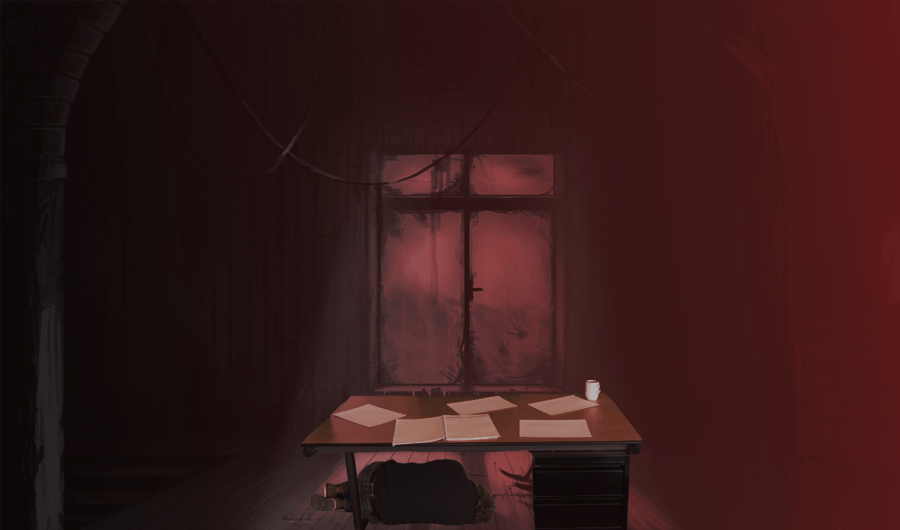

Door middel van je PHP script je een schild om je heen, stevig genoeg om C-scherpe bijlen bot te maken. Dark Knight Sietse zijn aanvalskracht is gedaald naar C. "Noooooo! Mijn Scherpte!". Door het verlies van de # raakt Dark Knight Sietse zijn zicht een stuk minder scherp. Na een lang gevecht is het je uiteindelijk gelukt om Dark Knight Sietse te kunnen verslaan. Het lijkt je een goed idee om ook zijn lichaam te onderzoeken, wie weet heeft hij waardevolle kennis bij zich...?
